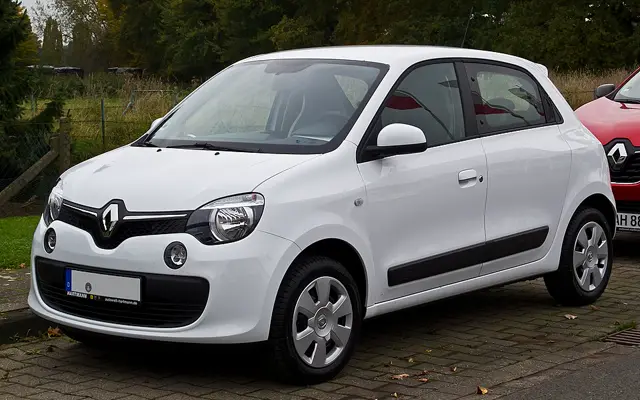

Par Motor › Precios por modelo › Renault Twingo
Precio de segunda mano · noviembre de 2026¿Cuánto vale un Renault Twingo de segunda mano?

Precio justo estimado de un Renault Twingo usado en España, año por año, con los kilómetros normales para su edad y en buen estado: de 1.600 € a 15.500 €. Para tasar el tuyo con sus kilómetros reales y su estado, usa el tasador gratis.
Precios del Renault Twingo por año
Twingo I (1993–2007)
Precio de nuevo: 1.2 60 CV, 8.000 € · 1.2 16v 75 CV, 8.500 €
| Año | Km normales | 1.2 60 CV · Gasolina | 1.2 16v 75 CV · Gasolina |
|---|---|---|---|
| 2007 | 100.000 km | 2.500 € | 2.700 € |
| 2006 | 100.000 km | 2.400 € | 2.500 € |
| 2005 | 100.000 km | 2.200 € | 2.400 € |
| 2004 | 100.000 km | 2.100 € | 2.200 € |
| 2003 | 100.000 km | 2.000 € | 2.100 € |
| 2002 | 100.000 km | 1.800 € | 1.900 € |
| 2001 | 100.000 km | 1.700 € | 1.800 € |
| 2000 | 100.000 km | 1.600 € | 1.700 € |
| 1999 | 100.000 km | 1.600 € | 1.700 € |
| 1998 | 100.000 km | 1.600 € | 1.700 € |
| 1997 | 100.000 km | 1.700 € | 1.800 € |
| 1996 | 100.000 km | 1.700 € | 1.800 € |
| 1995 | 100.000 km | 1.700 € | 1.900 € |
| 1994 | 100.000 km | 1.800 € | 1.900 € |
| 1993 | 100.000 km | 1.800 € | 1.900 € |
Twingo II (2007–2014)
Precio de nuevo: 1.2 75 CV, 9.500 € · 1.5 dCi 75 CV, 11.500 € · 1.2 TCe 100 CV, 11.500 €
| Año | Km normales | 1.2 75 CV · Gasolina | 1.5 dCi 75 CV · Diésel | 1.2 TCe 100 CV · Gasolina |
|---|---|---|---|---|
| 2014 | 100.000 km | 4.700 € | 5.600 € | 5.700 € |
| 2013 | 100.000 km | 4.400 € | 5.200 € | 5.400 € |
| 2012 | 100.000 km | 4.200 € | 4.900 € | 5.000 € |
| 2011 | 100.000 km | 3.900 € | 4.600 € | 4.700 € |
| 2010 | 100.000 km | 3.700 € | 4.300 € | 4.400 € |
| 2009 | 100.000 km | 3.400 € | 4.000 € | 4.100 € |
| 2008 | 100.000 km | 3.200 € | 3.800 € | 3.900 € |
| 2007 | 100.000 km | 3.000 € | 3.500 € | 3.600 € |
Consume muchísimo aceite por un defecto de diseño y, si nadie lo vigila, el motor se queda sin aceite y se rompe. Renault llegó a reparar y reprogramar muchas unidades. Pregunta si se hizo esa reparación y comprueba que el nivel de aceite no baja entre revisiones.
Twingo III (2014–2024)
Precio de nuevo: 1.0 SCe 70 CV, 11.500 € · Electric 82 CV, 22.000 € · 0.9 TCe 90 CV, 13.500 €
| Año | Km normales | 1.0 SCe 70 CV · Gasolina | Electric 82 CV · Eléctrico | 0.9 TCe 90 CV · Gasolina |
|---|---|---|---|---|
| 2024 | 35.000 km | 9.600 € | 15.500 € | 11.200 € |
| 2023 | 50.000 km | 9.000 € | 14.600 € | 10.500 € |
| 2022 | 65.000 km | 8.400 € | 13.600 € | 9.900 € |
| 2021 | 80.000 km | 7.500 € | 12.300 € | 8.900 € |
| 2020 | 95.000 km | 6.600 € | 10.800 € | 7.800 € |
| 2019 | 100.000 km | 6.300 € | 10.200 € | 7.400 € |
| 2018 | 100.000 km | 6.200 € | 10.100 € | 7.300 € |
| 2017 | 100.000 km | 6.100 € | 9.900 € | 7.100 € |
| 2016 | 100.000 km | 5.900 € | 9.700 € | 7.000 € |
| 2015 | 100.000 km | 5.800 € | 9.400 € | 6.800 € |
| 2014 | 100.000 km | 5.700 € | 9.200 € | 6.700 € |
Kilómetros normales: 15.000 al año en gasolina, híbridos y eléctricos, y 20.000 en diésel, con un máximo de 100.000 km (por encima no tasamos: el precio depende demasiado del historial de cada coche). Cifras redondeadas a 100 €.
Preguntas frecuentes
¿Cuánto vale un Renault Twingo de segunda mano?
Según el año, la versión y los kilómetros, un Renault Twingo usado vale hoy de 1.600 € a 15.500 € en España. El más barato de nuestra tabla es un 1.2 de 1999 (1.600 €) y el más caro un Electric de 2024 (15.500 €). Son precios justos estimados entre particulares y profesionales, con los kilómetros normales para su edad y en buen estado.
¿Cuánto valor pierde un Renault Twingo al año?
Con unos años encima, un Renault Twingo pierde alrededor de un 10 % de su valor cada año (calculado sobre el 1.0 SCe de la generación Twingo III). Los primeros años la caída es mayor y a partir de los 70.000 km se acelera.
¿Qué motorizaciones tiene el Renault Twingo?
En nuestra base de datos hay versiones gasolina, diésel y eléctrico, en 3 generaciónes: Twingo I, Twingo II y Twingo III.
¿Qué motores del Renault Twingo dan problemas?
Ojo con el Renault y Nissan 1.2 TCe / 1.2 DIG-T (consumo de aceite) (1.2 TCe, 2012–2014): son motores con fallos graves y muy extendidos. Antes de comprar uno, pide el historial de mantenimiento y comprueba si ya se hizo la reparación. El resto de motores no tiene problemas fuera de lo normal.
¿Cómo sé si me piden demasiado por un Renault Twingo?
Abre el tasador de Par Motor, elige el Renault Twingo, el año y los kilómetros reales, y escribe lo que te piden. Te diremos si está por debajo del precio justo (chollo) o por encima (caro). Es gratis y no pide registro ni matrícula.
Otros Renault
- Arkana
- Austral
- Captur
- Clio
- Espace
- Fluence
- Kadjar
- Kangoo
- Koleos
- Laguna
- Mégane
- Mégane E-Tech
- Rafale
- Renault 4
- Renault 5
- Scénic
- Symbioz
- Talisman
- Zoe
Compara su coste real
El precio de compra es solo una parte. Mira cuánto te costaría al mes con combustible, seguro, neumáticos, mantenimiento y lo que pierde de valor.
Abrir el comparador →